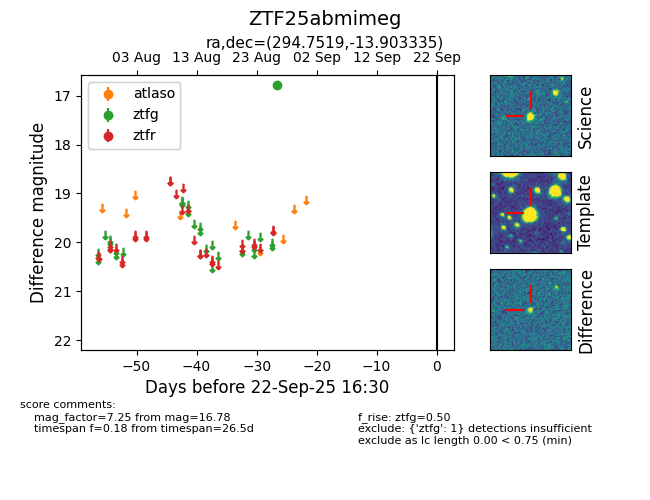

FINK: ZTF25abmimeg
Lasair: ZTF25abmimeg
ALeRCE: ZTF25abmimeg
ZTF25abmimeg (ztf,fink)
equatorial (ra, dec) = (294.7519,-13.90333)
galactic (l, b) = (25.5752,-16.71414)

last ztfg=16.78
1 ztfg detections